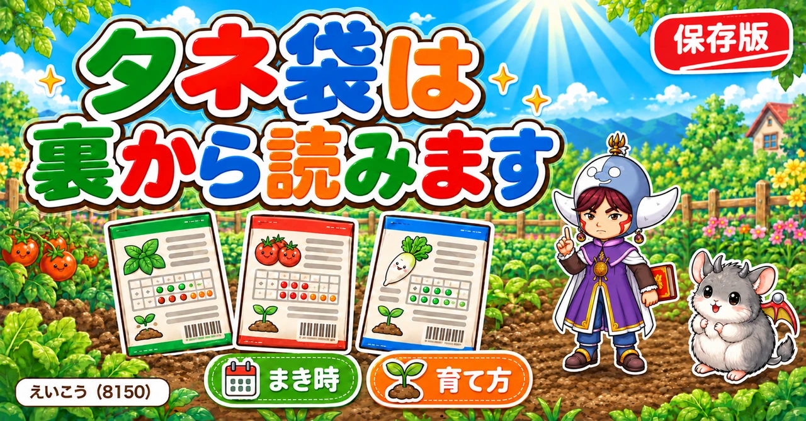
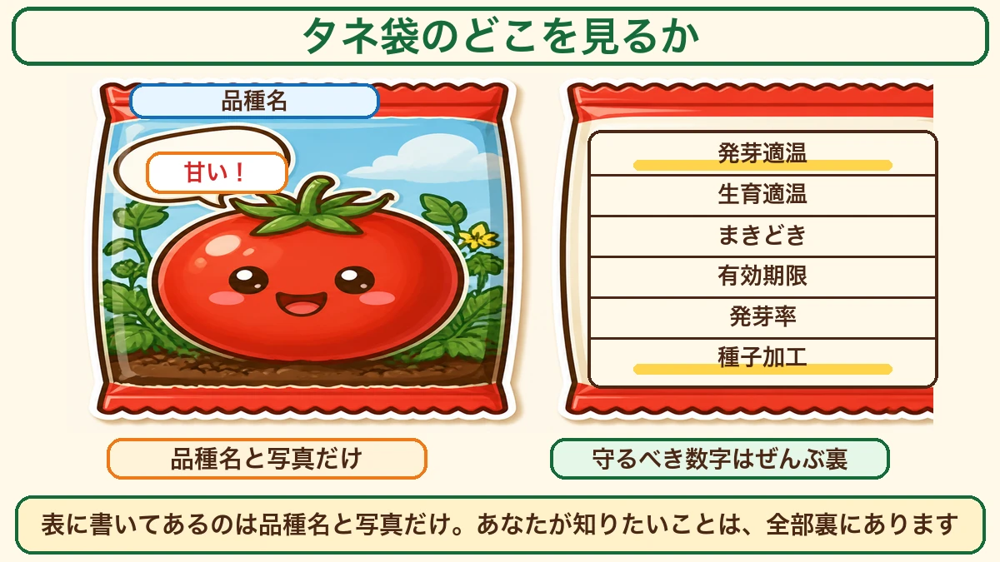
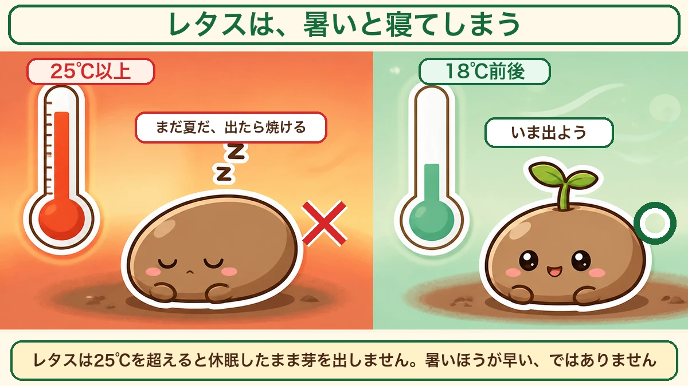
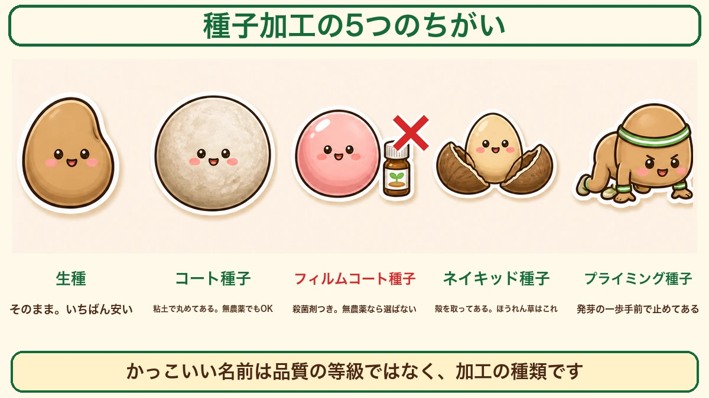
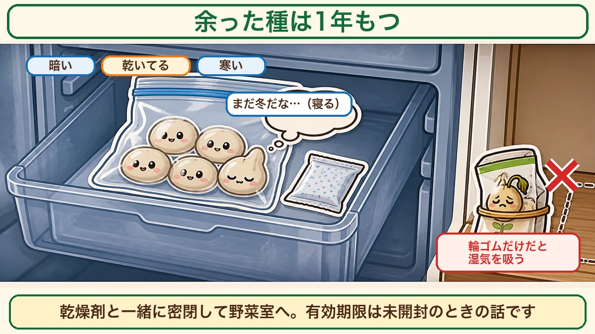

タネ袋の読み方｜発芽適温・まき時の表・有効期限と発芽率・種の加工の種類・余った種の保存

どうも、8150（えいこう）です🌱 家庭菜園歴8年、理科の教員免許を持っていて、有機・無農薬で野菜を育てています。
📖 この記事の目次
この記事で分かること
- タネ袋の表には、野菜の名前と写真くらいしか書かれていません。育て方の大事な情報は、ほとんど裏に書かれています。
- 「発芽適温」は、空気の温度ではなく、種がいる土の温度（地温）のことです。
- 「まき時」の表は、地域ごと・作型ごとに分かれています。自分の地域と、育てたい季節の欄を確かめます。
- 「有効期限」までは、袋に書かれた「発芽率」が期待できる、という意味です。期限を過ぎたらすぐに芽が出なくなるわけではありませんが、発芽率は少しずつ下がっていきます。
- 種には、そのままの種のほかに、粘土で包んだ種や、薄い膜でおおった種など、加工されたものがあります。
- 余った種は、乾燥剤と一緒に密閉して、涼しく暗い場所に保存すれば、翌年も使えることが多いです。
ホームセンターの種の売り場には、たくさんのタネ袋が並んでいますよね。表には、おいしそうな野菜の写真と、品種の名前。つい、写真だけを見て選んでしまいがちです。でも、写真がいちばんおいしそうな袋が、自分の畑にいちばん合っているとはかぎりません。まく季節や、住んでいる地域に合っているかどうかは、袋の裏を見ないと分からないんです。
でも、タネ袋の本当の見どころは、裏側にあります。いつまけばいいか、何度で芽が出るか、何日で収穫できるか。育て方の大事な情報が、小さな字でぎっしり書かれているんです。
この記事では、タネ袋の裏の読み方を、項目ごとに順番に書いていきます。袋を裏返して読めるようになると、種まきの失敗がぐっと減りますよ。

早見：タネ袋の裏の見どころ（ひと目で分かる目安）
裏に書かれている主な項目
- 品種の特徴：どんな野菜か、どんな育て方に向いているか
- まき時（栽培カレンダー）：地域ごとの、種まき・植えつけ・収穫の時期
- 発芽適温：芽が出やすい土の温度
- 生育適温：育ちやすい温度
- 育て方：まき方、株間、間引き、追肥など
- 有効期限：表示の発芽率が期待できる期限
- 発芽率：まいた種のうち、どれくらい芽が出るかの目安
- 種子の加工：コート種子、消毒の有無など
- 内容量：粒数や、量
特に大事な3つ
- 発芽適温：地温で考える
- まき時：自分の地域と季節の欄を見る
- 有効期限と発芽率：セットで見る
袋の表から分かること
表側にも、少しだけ大事な情報があります。
- 品種名：同じ野菜でも、品種によって育てやすさや味が違う。気に入った品種は名前を覚えておく
- 特徴の一言：「とう立ちが遅い」「病気に強い」「早どり」などの短い説明は、品種選びのヒントになる
- 写真：育ったときの形や色の目安。ただし、写真どおりに育つかは、育て方や天気しだい
表で気になった品種を見つけたら、裏返して、自分の育てたい季節と地域に合うかを確かめる、という順番で見ていくのがおすすめです。
作業の手順
ここからは、タネ袋を買うときから、まくまでの読み方を、順番に書いていきます。
手順1：育てたい季節に、まける品種か確かめる
同じ野菜でも、品種によって、まける季節が違います。
- 春まき専用の品種
- 秋まき専用の品種
- 春も秋もまける品種
- 夏にまける品種
袋の裏の「まき時」の表で、育てたい季節にまけるかを、買う前に確かめてください。野菜の名前だけで選ぶと、「秋にまこうと思ったのに、春まき用の品種だった」ということがあります。今の時期にまけるかどうかを、必ず確かめてから買いましょう。
手順2：自分の地域の欄を見る
まき時の表は、多くの場合、地域ごとに分かれています。
- 寒い地域（寒冷地）
- 一般的な地域（中間地）
- 暖かい地域（暖地）
自分の住んでいる地域がどれに当たるかは、袋に地図や説明が書かれていることもあります。分からなければ、お店の人に聞いてみてください。同じ野菜でも、地域によって、まく時期が1か月近く違うこともあります。
地域の分け方の目安
袋によって分け方は少し違いますが、だいたい次のように考えられています。
- 寒冷地：北海道や東北、標高の高い地域など。春が遅く、秋が早い
- 中間地：関東から近畿の平野部など。多くの袋で標準とされる地域
- 暖地：九州や四国、太平洋側の暖かい地域など。春が早く、秋が遅い
同じ県の中でも、山あいと海沿いでは気候が違うことがあります。迷ったら、近くの農家さんや、地域の種苗店の人に聞いてみるのが確実です。
作型（さくがた）という考え方
同じ野菜でも、いつまいて、いつ収穫するかによって、育て方の型が変わります。これを「作型」と言います。
- 春まき：春にまいて、初夏から夏に収穫
- 夏まき：夏にまいて、秋から冬に収穫
- 秋まき：秋にまいて、冬から翌年の春に収穫
- トンネル栽培：ビニールトンネルで保温して、本来の時期より早くまいたり、冬にも育てたりする
袋のまき時の表には、品種に合った作型が書かれています。トンネルなどの保温をするときだけまける時期は、別の線や記号で示されていることもあるので、表の説明をよく読んでください。
手順3：まき時の表を読む
まき時の表には、種まき、植えつけ、収穫の時期が、線や色で示されています。
- 種まきの時期：この期間に種をまく
- 植えつけの時期：苗を作ってから植える場合の時期
- 収穫の時期：この期間に収穫できる
表の見方は、メーカーによって少しずつ違います。袋に書かれた説明（凡例）を確かめてから読んでください。
また、袋に書かれた時期は、あくまで目安です。たとえば、夏まきのにんじんは、袋には幅広い時期が書かれていても、土が乾きにくい梅雨の時期にまくのがいい、という説明もあります。袋の時期と、その年の天気や畑の状態を合わせて考えてください。
株間・条間・まき方を読む
育て方の欄には、まき方や間かくの目安が書かれています。
- 株間（かぶま）：株と株のあいだの間かく
- 条間（じょうかん）：列と列のあいだの間かく
- すじまき：溝を作って、すじ状に種をまく方法
- 点まき：決まった間かくで、1か所に数粒ずつまく方法
- ばらまき：畝全体に、ぱらぱらと種をまく方法
袋に書かれた株間は、育ったときに、ちょうど葉が触れ合わないくらいの間かくです。種をまく段階では、株間より狭くまいておいて、育つにつれて間引いて、最後に袋の株間になるようにするのが一般的です。苗が小さいうちは広く見えますが、目安どおりにあけておくと、育ってから混みあわずにすみます。
間引きの回数や時期、追肥の目安が書かれている袋もあります。種をまいたあとも、袋を手元に置いておくと便利です。
手順4：発芽適温を確かめる
袋の裏には、「発芽適温」と「生育適温」が書かれています。
- 発芽適温：種が芽を出しやすい温度
- 生育適温：芽が出たあと、育ちやすい温度
ここで大事なのは、発芽適温は、空気の温度（気温）ではなく、種がいる土の温度（地温）だということです。どんなに気温が高くても、土の温度が低ければ、種は芽を出しません。
春先は、昼間の気温が上がっても、土はまだ冷たいままのことが多いです。温度計を土に差して、地温を測ってみると、種をまくタイミングがよく分かります。
発芽適温と生育適温は、別の数字です。混同しないように気をつけてください。
手順5：暑すぎても芽が出ない種がある
発芽適温には、下限だけでなく、上限もあります。温度が高すぎても、芽が出にくくなる種があるんです。
たとえば、レタスは、暑い時期にまくと芽が出にくくなります。高い温度だと、種が眠ったような状態になってしまうからです。夏にレタスの種をまくときは、涼しい場所で芽を出させたり、水をふだんより多めにして土を冷やしたりする工夫が必要です。

ほうれん草も、暑さが苦手で、夏は芽が出にくい野菜です。袋の発芽適温の上限も、確かめておいてください。
手順6：「◯◯日タイプ」を読む
とうもろこしなどの袋には、「80日タイプ」のように、日数が書かれていることがあります。これは、種まきから収穫までのおおよその日数の目安です。
収穫したい時期から逆算して、種をまく日を決めるのに使えます。日数が短い品種は早くとれて、長い品種はじっくり育つぶん大きくなりやすい、という傾向があります。
ただし、この日数は、苗を作る期間（育苗日数）とは別のものです。また、気温によって前後するので、あくまで目安と考えてください。
手順7：有効期限と発芽率をセットで見る
袋の裏には、「有効期限」と「発芽率」が書かれています。
- 発芽率：まいた種のうち、どれくらいの割合で芽が出るかの目安。たとえば80%なら、10粒まいて8粒くらい
- 有効期限：この期限までは、表示の発芽率が期待できる、という意味
有効期限を過ぎたからといって、次の日から急に芽が出なくなるわけではありません。期限は、あくまで「この日までは表示の発芽率が期待できる」という目安です。保存のしかたしだいで、期限を過ぎたあとの芽の出方は大きく変わってきます。湿気と暑さを避けて、涼しく暗い場所で、大切に保存しておいてくださいね。ただ、時間がたつにつれて、発芽率は少しずつ下がっていきます。
手順8：開けたら、期限は目安にならない
有効期限は、未開封で、きちんと保存されていた場合の話です。一度袋を開けると、空気中の湿気を吸って、種は早く弱っていきます。開けた種は、期限よりも、どう保存したかが大切になります。
手順9：袋の量を見る
袋には、粒数や量が書かれています。
- 何株育てたいか
- 何回かに分けてまくか
を考えて、ちょうどいい量の袋を選びます。家庭菜園では、1袋で使いきれないことも多いので、余った種の保存も考えておきましょう。
野菜ごとの袋の見どころ
にんじん
- まき時の表で、春まきか夏まきかを確かめる。夏まきの品種を春にまくと、とう立ちしやすいことがある
- コート種子かどうかを確かめる。コート種子は、水をしっかり与える
- 根の長さ（五寸、三寸など）も確かめる。土が浅い畑なら、短い品種が育てやすい
大根
- 春まき用か、秋まき用か。春まきの大根は、とう立ちしにくい品種を選ぶ
- 根の形と長さ。青首、白首、丸い大根、ミニ大根など
- 収穫までの日数
ほうれん草
- 発芽適温の上限。暑い時期は芽が出にくい
- ネイキッド種子かどうか。殻を取りのぞいた種は、芽がそろいやすい
- とう立ちの遅さ。春まきは、とう立ちが遅い品種を選ぶ
レタス
- 光を好む種なので、土を薄くかけることが書かれていることが多い
- 暑い時期の発芽の注意
- 玉レタス、リーフレタス、ロメインレタスなどの種類
トマト・なす・ピーマン
- 発芽適温と、苗を作る期間（育苗日数）
- 畑に植えつける時期
- 病気に強い性質（耐病性）が書かれていることもある
とうもろこし
- ◯◯日タイプ（収穫までの日数）
- 粒の色（黄色、白、黄色と白が混ざったものなど）
- ほかの品種と混ぜて植えないように、という注意が書かれていることもある
枝豆
- 早生、中生、晩生の違い。早生は早くとれて、晩生はじっくり育つ
- まき時の表で、夏まきができるかを確かめる
キャベツ・白菜
- 早生、中生、晩生の違い。早生は早く収穫でき、晩生はじっくり育って大きくなる
- 作型。春まき、夏まき、秋まき（春キャベツ）など、まく時期で品種が分かれていることが多い
- 玉の大きさや形。ミニ白菜、とんがりキャベツなど
きゅうり・かぼちゃ
- きゅうりは、春まき用と、夏まき用の品種がある。夏まき用は、暑さや病気に強いものが多い
- かぼちゃは、つるの伸び方（つるなし、ふつう）、実の大きさ（小玉、大玉）が書かれている
- どちらも、病気に強い性質（耐病性）が書かれていることがある
葉物（小松菜・水菜・かぶなど）
- 春から秋まで、長くまける品種が多い
- 収穫までの日数が短いので、何回かに分けてまくと長く楽しめる
種の加工の種類
袋の裏に、「コート種子」「ペレット」「フィルムコート」などと書かれていることがあります。これは、種に加工がしてある、という意味です。

そのままの種（生種）
何も加工していない、そのままの種です。にんじんやレタスのように、小さくて軽い種もあれば、豆のように大きな種もあります。
コート種子（ペレット種子）
小さな種を、粘土などで包んで、粒を大きく丸くした種です。
- 粒が大きいので、1粒ずつまきやすい
- まく間かくをそろえやすく、間引きの手間が減る
- ただし、まわりの粘土が溶けないと芽が出ないので、水をしっかり与える必要がある
- 同じ値段でも、そのままの種に比べて粒数が少ないことが多い
にんじんやレタスなど、小さな種でよく使われます。
フィルムコート種子
種の表面を、薄い膜でおおった種です。色がついていることが多く、膜に、病気を防ぐための薬（殺菌剤）が含まれていることもあります。袋の裏に、どんな処理をしているかが書かれているので、無農薬で育てたい方は確かめてから選んでください。
ネイキッド種子
ほうれん草の種は、もともとかたい殻に包まれていて、水を吸いにくい性質があります。この殻を取りのぞいて、芽が出やすくした種が、ネイキッド種子です。水を吸いやすく、芽の出がそろいやすいのが特徴です。
プライミング種子
芽が出る準備を少し進めてから、もう一度乾かした種です。まいたあと、早く、そろって芽が出やすいと言われます。ただ、そのぶん、種の寿命は短くなりやすいので、早めに使い切るのがおすすめです。
薬剤処理の表示
種によっては、病気を防ぐために、薬剤で処理（種子消毒）されていることがあります。その場合は、袋の裏に、使った薬剤の名前や、処理の回数が書かれています。
処理された種は、色がついていることが多く、見た目でも分かります。薬を使わずに育てたい方は、「無消毒」や「種子消毒なし」と書かれた袋を選んでください。処理の表示は小さな字で書かれていることが多いので、虫めがねがあると便利です。
余った種の保存
保存の3つの条件
種は、生きています。保存のポイントは、次の3つです。
- 湿気を避ける（乾燥させる）
- 光を避ける
- 涼しい場所に置く

保存のしかた
- 袋の口を折ってテープでとめる
- 乾燥剤と一緒に、密閉できる袋や容器に入れる
- 光を通さない封筒などに入れて、冷蔵庫の野菜室などに保存する
- 袋に、開けた日付を書いておく
冷蔵庫から出して使うときは、しばらく室温に置いて、袋の中に水滴がつかないようにしてから開けると安心です。
湿った種は、袋に戻さない
種まきのときに、手の上に出した種が湿ってしまうことがあります。湿った種を袋に戻すと、袋の中の種まで湿気を吸ってしまいます。余った湿った種は、袋に戻さず、そのまま畑の空いている場所や、畝のあいだにまいてしまうのもひとつの方法です。
葉物の余り種は、まとめて使う
小松菜、水菜、かぶなどの葉物の種は、1袋にたくさん入っています。余った種は、何種類かを混ぜてまいて、ベビーリーフとして楽しむのもおすすめです。
発芽を試してみる
古い種や、保存状態が心配な種は、まく前に発芽を試してみると安心です。
- 湿らせたキッチンペーパーを、皿や浅い容器に敷く
- 種を10粒くらい並べる
- ラップをかけて、暖かい場所に置く
- 数日から1週間ほどで、何粒から根が出るかを数える
10粒のうち8粒から根が出れば、発芽率はおよそ80%です。発芽率が低ければ、そのぶん多めにまけば大丈夫です。根が出た種は、そのまま土に植えることもできます。
売り場で迷ったら、この順番で
- まず、育てたい季節に、自分の地域でまけるかを、まき時の表で確かめる
- 次に、育てやすさの一言（病気に強い、とう立ちが遅い、早どりなど）を見る
- 最後に、有効期限と、内容量を確かめる
この3つを順番に見ていくと、たくさんの袋の中からでも、自分に合った種を選びやすくなります。迷ったら、その地域でよく売られている定番の品種を選ぶのも、失敗しにくい方法です。
種を買うときのコツ
- 必要な時期の少し前に買う。種まきの直前だと、人気の品種が売り切れていることもある
- ホームセンター、園芸店、通信販売などで手に入る
- 有効期限を確かめて、なるべく新しいものを選ぶ
- 使う量に合った大きさの袋を選ぶ
春と秋は、種の売り場がいちばんにぎわう時期です。品ぞろえが多いうちに選ぶと、気に入った品種に出会いやすくなります。育てたい野菜が決まったら、袋の裏を読み比べながら、ゆっくり選んでみてください。
余った種を、楽しく使い切る
- 家族や友だちに分ける
- 時期をずらして、何回かに分けてまく
- プランターで、ベビーリーフとして育てる
- 葉物は、いろいろな種類を混ぜてまくと、色とりどりのサラダ菜になる
種は、使えば使うほど、育て方のこつが分かってきます。余らせて古くしてしまうより、どんどんまいて楽しむのもおすすめです。1袋の種から、何回も収穫を楽しめるのは、種から育てる家庭菜園ならではのぜいたくですね。
失敗の見分け方
袋どおりにまいたのに、芽が出ない
- 地温が足りなかった（気温で判断していた）
- 暑すぎた（レタスやほうれん草など）
- 土が乾いた
- コート種子で、水が足りなかった
- 種が古かった、保存状態が悪かった
まき時の表どおりにまいたのに、うまく育たない
- 自分の地域と違う欄を見ていた
- その年の天気が、例年と違った
- 育てたい季節に向かない品種だった
コート種子の芽がそろわなかった
コート種子は、まわりの粘土が水で溶けないと芽が出ません。まいたあとの水が足りなかったり、土が途中で乾いたりすると、芽の出がばらつきます。芽が出るまでは、土を乾かさないように、こまめに水をやってください。
余った種をまいたら、芽の出が悪かった
- 保存中に湿気を吸った
- 暑い場所に置いていた
- 寿命の短い種だった（ねぎ、玉ねぎ、にんじんなど）
古い種をまくときは、事前に湿らせた紙の上で、芽が出るか試してみると安心です。
説明が分かれていること
コート種子か、そのままの種か
- そのままの種がいい、という説明：コーティングを溶かすのに水がたくさん必要。同じ値段で入っている粒数が少ない
- コート種子がいい、という説明：まきやすく、発芽もいい。ある程度の面積にまくなら便利
水をしっかり管理できるなら、コート種子はまきやすくて便利です。夏まきなど乾きやすい時期は、そのままの種を多めにまくほうが安心、という考え方もあります。
余った種は翌年に残すか、その年に使い切るか
- 保存して、翌年の春にも使う、という説明
- 基本的には新しい種を使う。寿命が短い種は使い切る、という説明
- にんじんなら、前の年の種でも使う、という個人的な判断もある
野菜の種類と、保存の状態で決めてください。寿命の短い種や、保存状態が心配な種は、試しに発芽を確かめてからまくのがおすすめです。
種の寿命と、発芽率
種の寿命の長さは、野菜によって違うと言われます。でも、寿命が長いからといって、発芽率がずっと高いままとはかぎりません。寿命と発芽率は別のもの、と考えてください。
お店によって、種の芽の出は違うか
値段の違うお店の種で、芽の出を比べてみた、という話もあります。ただ、まいたときの管理や、比べた数によっても結果は変わるので、お店の違いだけで決めつけることはできません。
よくある質問
Q. 有効期限が切れた種は、まいてもいいですか？
A. まいてもかまいません。きちんと保存されていれば、期限を少し過ぎても芽が出ることは多いです。ただ、発芽率は下がっていることが多いので、多めにまくか、事前に湿らせた紙の上で芽が出るか試してから使うと安心です。
Q. 寿命の短い種、長い種はどれですか？
A. 一般に、ねぎ、玉ねぎ、にんじん、ほうれん草などは寿命が短めで、トマト、なす、きゅうり、かぼちゃなどの実を食べる野菜は長めと言われます。ただ、保存の状態によって大きく変わります。
Q. 種袋は、捨てずにとっておいたほうがいいですか？
A. とっておくのがおすすめです。袋の裏には、育て方や収穫の目安が書かれているので、育てている途中で見返すと役立ちます。品種の名前も分かるので、来年また同じ品種を選ぶときの参考になります。
Q. 固定種とF1、どちらを選べばいいですか？
A. どちらでもかまいません。F1は育ちがそろいやすく、病気に強いものも多いので、初めての方にも育てやすいです。固定種は、種を採って翌年もまけるのが魅力です。袋に「○○交配」と書かれていればF1、「固定種」と書かれていれば固定種です。
Q. 袋の「内容量」が、粒数ではなく量で書かれています
A. 小さな種は、量（ミリリットルなど）で書かれていることがあります。何粒入っているかの目安は、メーカーによって違うので、まきたい面積と照らし合わせて、少し多めに買っておくと安心です。
Q. 種袋の字が小さくて読みにくいです
A. 袋の裏は、たくさんの情報をつめこんでいるので、どうしても字が小さくなりがちです。虫めがねを使ったり、スマートフォンのカメラで撮影して拡大したりすると読みやすくなります。撮影しておけば、袋をなくしても見返せるので、一石二鳥ですよ。
Q. 「早生」「中生」「晩生」は、どう読むのですか？
A. 「わせ」「なかて」「おくて」と読みます。早生は、種まきや植えつけから収穫までが早い品種、晩生はじっくり時間をかけて育つ品種、中生はその中間です。早生は早くとれるぶん小ぶりなこともあり、晩生は大きく育ちやすい、という傾向があります。収穫したい時期に合わせて選んでください。
Q. 種袋に「育苗」と「直まき」の両方が書かれています
A. どちらの方法でも育てられる、という意味です。直まきは、畑に直接種をまく方法で、手間が少なく済みます。育苗は、ポットなどで苗を作ってから畑に植える方法で、芽の出をそろえやすく、虫や鳥から守りやすいのが利点です。畑の状態や、使える時間に合わせて選んでください。
Q. 「とう立ちが遅い」とは、どういう意味ですか？
A. とう立ちとは、花を咲かせるための茎が伸びてくることです。とう立ちすると、葉物は葉がかたくなり、大根やにんじんは根がかたくなって、味が落ちてしまいます。「とう立ちが遅い」と書かれた品種は、花を咲かせるのが遅いので、収穫できる期間が長くなります。特に春にまく葉物や大根は、とう立ちが遅い品種を選ぶと安心です。
Q. 「耐病性」と書かれていれば、病気にならないのですか？
A. 耐病性は、特定の病気にかかりにくい性質があるという意味で、病気にまったくかからないわけではありません。袋に、どの病気に強いのかが書かれているので、確かめてみてください。育て方や天気によっては、病気が出ることもあるので、ふだんの見回りは続けましょう。
Q. 種袋の「適温」の幅は、どう考えればいいですか？
A. たとえば「発芽適温15〜25度」と書かれていたら、その範囲の土の温度なら芽が出やすい、という意味です。範囲の下のほうの温度でも、問題なく芽が出ることが多いです。範囲から大きく外れると、芽が出るのに時間がかかったり、出なかったりします。
Q. 収穫までの日数どおりに育ちません
A. 袋に書かれた日数は、ちょうどいい気温で育った場合の目安です。寒い時期は日数が長くなり、暑い時期は短くなることがあります。日数より、野菜の大きさや、袋に書かれた収穫の目安（実の色、大きさなど）を見て収穫してください。
Q. 種袋に書かれていない野菜の育て方は、どう調べればいいですか？
A. 種のメーカーのホームページに、品種ごとのくわしい育て方がのっていることがあります。袋に書かれた品種名で調べてみてください。また、同じ野菜の育て方の本や記事も参考になります。
Q. 種袋を、育てた記録に使えますか？
A. ぜひ使ってください。使い終わった袋を、畑ノートに貼っておくと、どの品種を、いつまいて、どうだったかが、ひと目で分かります。袋の裏に、まいた日や芽が出た日、収穫した日を書きこんでおくのもおすすめです。翌年、同じ品種を選ぶときや、違う品種と比べるときに、とても役立ちます。
Q. 海外の種の袋は、どう読めばいいですか？
A. 外国の種は、まき時が日本の気候に合っていないこともあります。発芽の温度や、収穫までの日数を参考にして、日本の同じ野菜のまき時に合わせて考えてください。気候の違いで、うまく育たないこともあるので、最初は少しだけ試してみるのがおすすめです。
Q. 同じ野菜で、袋によって値段がずいぶん違います
A. 品種の珍しさ、加工の有無、入っている量、F1か固定種か、などで値段が変わります。値段が高いから必ず育てやすいとはかぎらないので、袋の裏を読み比べて、自分の育て方に合ったものを選んでください。
Q. 去年の種と今年の種が混ざってしまいました
A. 袋に、開けた日付や、買った年を書いておくと、こうした混乱を防げます。混ざってしまった場合は、発芽を試してみて、芽の出がよければそのまま使えます。
Q. 通信販売で種を買うときに、気をつけることは？
A. 届いた種の袋の裏を、必ず読んでください。まき時の表や有効期限は、実際の袋で確かめるのがいちばん確実です。暑い時期に届いた種は、すぐに涼しい場所に移して保存しましょう。
Q. 種をまく前に、水につけたほうがいいですか？
A. 豆類や、かたい殻のある種は、一晩水につけてからまく方法もあります。ただ、つけすぎると腐ることもあるので、袋に書かれた方法に従ってください。コート種子は、水につけるとコーティングが溶けてしまうので、そのまままきます。
学ぶ🔬 なぜ発芽適温は「地温」なのか
ここからは、タネ袋の数字のしくみについて、少しだけ深く書いておきます。読み飛ばしても大丈夫です。
種は、土の中で温度を感じている
種は、土の中で、まわりの温度を感じとっています。種にとって大事なのは、まわりの土の温度です。空気がいくら暖かくても、種のまわりの土が冷たければ、種は「まだ寒い」と判断して、芽を出しません。
土は、空気より温まるのが遅い
土は、空気に比べて温まりにくく、冷えにくい性質があります。特に、水を含んだ土は、温まるのに時間がかかります。
春先に、日中の気温がぐっと上がっても、土の温度はまだ低いまま、ということがよくあります。逆に、秋は、気温が下がっても、土はしばらく暖かいままです。気温だけを見て種をまくと、春は早すぎて芽が出なかったり、秋は遅すぎたりすることがあるのは、このためです。
なぜ暑すぎると、芽が出ない種があるのか
レタスやほうれん草などは、もともと涼しい気候で育つ野菜です。暑すぎる時期に芽を出してしまうと、そのあと暑さで育たずに枯れてしまうかもしれません。
だから、暑すぎるときは、あえて芽を出さずに、涼しくなるのを待つ性質を持っているんです。これは、野菜が生き残るための工夫だと考えられています。
F1と固定種のしくみ
F1（一代交配種）は、性質の違う2つの親をかけ合わせた種です。かけ合わせた1代目は、両方の親のよいところを受けついで、育ちがそろいやすく、元気に育つ性質があります。
ただ、F1から採った種をまくと、親の性質がばらばらに出てきて、同じ野菜にはなりにくくなります。だから、F1の種は、毎年買うのが基本です。
固定種は、何代も種を採り続けて、性質がそろうようにしてきた種です。採った種をまいても、親に近い野菜が育ちやすいので、自分で種をつないでいくことができます。
発芽率は、どうやって測るのか
種の会社では、決まった条件で種をまいて、どれくらいの割合で芽が出るかを調べて、発芽率を出しています。袋に書かれた発芽率は、そうした条件のもとでの目安です。
家庭の畑は、温度も水分も、毎回違います。袋の発芽率どおりに芽が出ないこともありますが、それは種が悪いのではなく、まいたときの条件が違うことも多いんです。
種の中には、お弁当が入っている
種の中には、芽を出して、葉を広げて、自分で栄養を作れるようになるまでの「お弁当」がたくわえられています。豆のように、双葉そのものにお弁当をためている種もあれば、お弁当の部屋が別にある種もあります。
大きな種ほど、お弁当をたくさん持っているので、少し深くまいても芽を出せます。小さな種はお弁当が少ないので、浅くまく必要があります。袋に書かれた「土を薄くかける」「1cmくらいかける」といった指示は、種のお弁当の量に合わせたものなんですね。
光で芽を出す種、暗いと芽を出す種
種には、光を感じたときに芽を出しやすいもの（好光性種子）と、暗いところで芽を出しやすいもの（嫌光性種子）があります。
にんじんやレタスは光を好む種なので、土をごく薄くかけます。大根やねぎは光を嫌う種なので、しっかり土をかけます。袋に「覆土は薄く」「覆土はしっかり」と書かれているのは、この性質のためです。
なぜ種は、湿気に弱いのか
種は、乾いた状態で、静かに眠っています。湿気を吸うと、種の中で、芽を出す準備が少しずつ始まってしまいます。でも、まかれていないので、そのまま準備だけが進んで、種の中の栄養を使ってしまいます。
これをくり返すと、種はだんだん弱っていきます。保存のときに乾燥が大事なのは、種をしっかり眠らせておくためなんですね。
まとめ
ここまで読んでくださって、ありがとうございます！
タネ袋の読み方のポイントを、もう一度まとめておきます。
- 大事な情報は、ほとんど袋の裏にある
- まき時の表は、自分の地域と、育てたい季節の欄を見る
- 発芽適温は地温。温度計で土の温度を測る
- 暑すぎても芽が出ない種がある（レタス、ほうれん草など）
- ◯◯日タイプは、種まきから収穫までの目安
- 有効期限と発芽率はセットで見る。開けたら保存状態が大切
- コート種子は水をしっかり。フィルムコートは処理の内容を確かめる
- 余った種は、乾燥剤と一緒に密閉して、涼しく暗い場所へ
タネ袋は、小さな育て方の教科書です。裏を読む習慣をつけると、種まきの失敗がぐっと減ります。同じ野菜でも、品種ごとに書かれていることが少しずつ違うので、読み比べてみるのも楽しいですよ。
まずは、手元にあるタネ袋を1枚、裏返して、ゆっくりじっくり読んでみてください🌱
レタスのタネ
この記事に出てくる「25℃以上だと休眠する」を、実際に確かめられるタネです。夏にまくと出てきません。18℃前後まで下がると、待っていたように芽を出します。タネ袋の裏の発芽適温を見比べてみてください。
![[商品価格に関しましては、リンクが作成された時点と現時点で情報が変更されている場合がございます。]](https://hbb.afl.rakuten.co.jp/hgb/56d217e1.4eab06f8.56d217e2.1513a8ec/?me_id=1204270&item_id=10000397&pc=https%3A%2F%2Fthumbnail.image.rakuten.co.jp%2F%400_mall%2Fnikkoseed%2Fcabinet%2Fgoq002%2F6479_1.jpg%3F_ex%3D240x240&s=240x240&t=picttext "[商品価格に関しましては、リンクが作成された時点と現時点で情報が変更されている場合がございます。]")

ほうれん草のタネ
ほうれん草はかたい殻に守られていて、発芽が揃いにくい野菜です。もし苦労した経験があるなら、袋の裏に「ネイキッド」と書いてあるものを探してみてください。殻を取ってあるぶん水がすぐ入ります。
![[商品価格に関しましては、リンクが作成された時点と現時点で情報が変更されている場合がございます。]](https://hbb.afl.rakuten.co.jp/hgb/56d218b8.a80573a6.56d218b9.1d398fba/?me_id=1241438&item_id=10032053&pc=https%3A%2F%2Fthumbnail.image.rakuten.co.jp%2F%400_mall%2Fnogyoya%2Fcabinet%2Fcube7%2F2246239_2.jpg%3F_ex%3D240x240&s=240x240&t=picttext "[商品価格に関しましては、リンクが作成された時点と現時点で情報が変更されている場合がございます。]")
小松菜のタネ（固定種）
いちばん失敗しにくい野菜です。そして固定種なので、自分でタネを採って来年もまけます。買ったタネを1年で使い切る前提のF1とは、そこが違います。どちらが正しいということはなく、目的が違うだけです。
![[商品価格に関しましては、リンクが作成された時点と現時点で情報が変更されている場合がございます。]](https://hbb.afl.rakuten.co.jp/hgb/56e76943.db126f41.56e76944.bd847f20/?me_id=1270580&item_id=10012154&pc=https%3A%2F%2Fthumbnail.image.rakuten.co.jp%2F%400_mall%2Ftekutekushop%2Fcabinet%2Fseed%2Fhn063.jpg%3F_ex%3D240x240&s=240x240&t=picttext "[商品価格に関しましては、リンクが作成された時点と現時点で情報が変更されている場合がございます。]")
乾燥剤（シリカゲル）
有効期限は未開封のときの話です。一度開けた袋は湿気を吸って、タネが少しずつ体力を使っていきます。乾燥剤を一緒に入れておけば、開けたあとでも1年は普通に使えます。
![[商品価格に関しましては、リンクが作成された時点と現時点で情報が変更されている場合がございます。]](https://hbb.afl.rakuten.co.jp/hgb/56eb9618.3f325504.56eb9619.e861bcb7/?me_id=1358935&item_id=10000079&pc=https%3A%2F%2Fthumbnail.image.rakuten.co.jp%2F%400_mall%2Fhw-enable%2Fcabinet%2Fsilicagel%2Ffujigel%2F10gn.jpg%3F_ex%3D240x240&s=240x240&t=picttext "[商品価格に関しましては、リンクが作成された時点と現時点で情報が変更されている場合がございます。]")
チャック付き保存袋
乾燥剤と一緒に、これに入れて冷蔵庫の野菜室へ。暗くて、乾いていて、寒い。タネにとっては「まだ冬が続いている」状態なので、目を覚ましません。輪ゴムで留めただけの袋は、湿気を吸います。
![[商品価格に関しましては、リンクが作成された時点と現時点で情報が変更されている場合がございます。]](https://hbb.afl.rakuten.co.jp/hgb/56eb9768.493f3421.56eb9769.0365e053/?me_id=1228244&item_id=10000759&pc=https%3A%2F%2Fthumbnail.image.rakuten.co.jp%2F%400_mall%2Fluxfort%2Fcabinet%2Fgtg2%2Fxp-13_w.jpg%3F_ex%3D240x240&s=240x240&t=picttext "[商品価格に関しましては、リンクが作成された時点と現時点で情報が変更されている場合がございます。]")